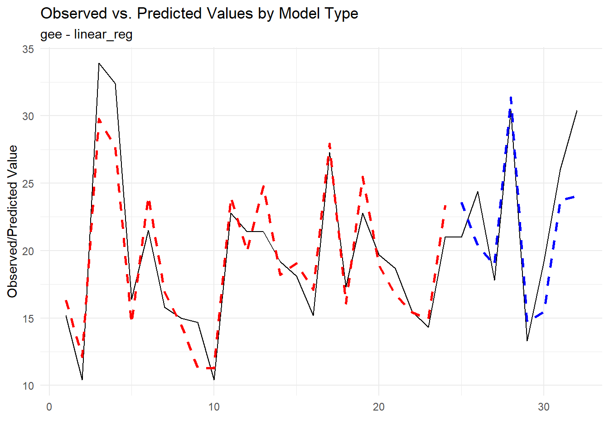
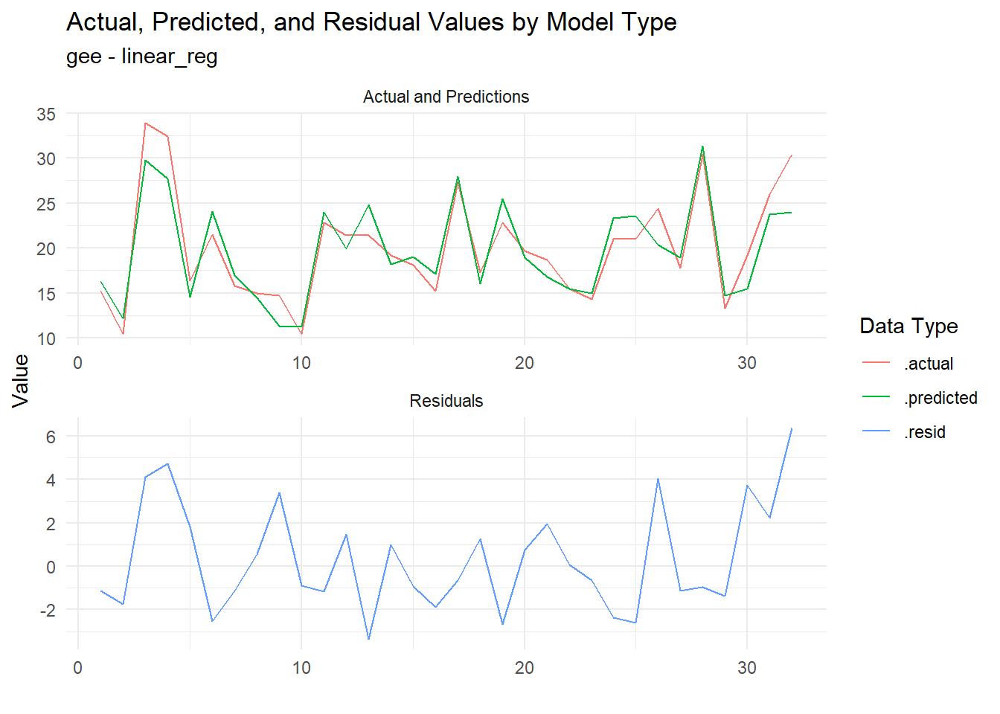
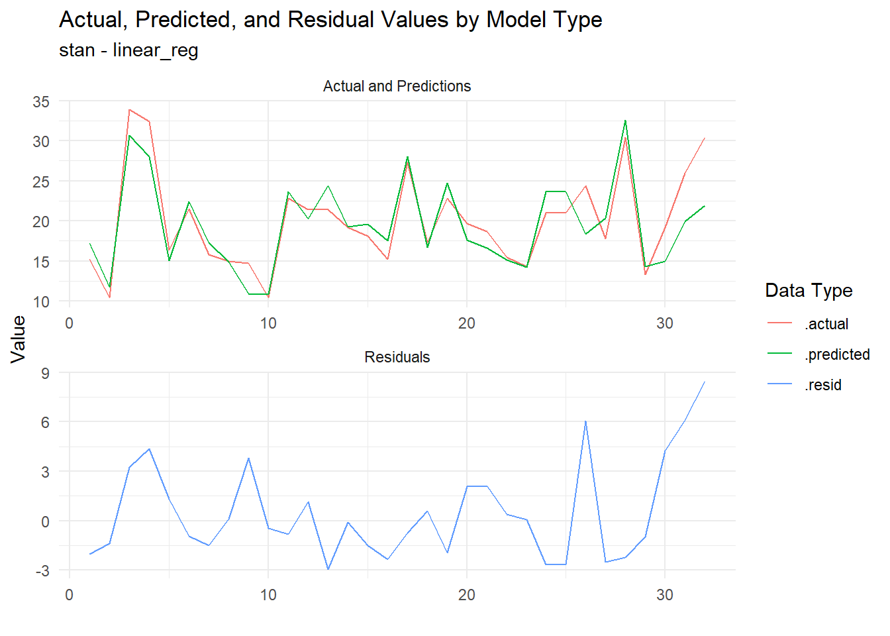

# Load packages
library(tidyAML)
library(tidymodels)
library(tidyverse)
library(multilevelmod) # for the gee model
tidymodels_prefer() # good practice when using tidyAML
rec_obj <- recipe(mpg ~ ., data = mtcars)
frt_tbl <- fast_regression(
.data = mtcars,
.rec_obj = rec_obj,
.parsnip_eng = c("lm","glm","stan","gee"),
.parsnip_fns = "linear_reg"
)Introduction
Yesterday I discussed the use of the function internal_make_wflw_predictions() in the tidyAML R package. Today I will discuss the use of the function extract_wflw_pred() and the brand new function extract_regression_residuals() in the tidyAML R package. We breifly saw yesterday the output of the function internal_make_wflw_predictions() which is a list of tibbles that are typically inside of a list column in the final output of fast_regression() and fast_classification(). The function extract_wflw_pred() takes this list of tibbles and extracts them from that output. The function extract_regression_residuals() also extracts those tibbles and has the added feature of also returning the residuals. Let’s see how these functions work.
The new function
First, we will go over the syntax of the new function extract_regression_residuals().
extract_regression_residuals(.model_tbl, .pivot_long = FALSE)The function takes two arguments. The first argument is .model_tbl which is the output of fast_regression() or fast_classification(). The second argument is .pivot_long which is a logical argument that defaults to FALSE. If TRUE then the output will be in a long format. If FALSE then the output will be in a wide format. Let’s see how this works.
Example
Let’s break down the R code step by step:
- Loading Libraries:
library(tidyAML)
library(tidymodels)
library(tidyverse)
library(multilevelmod) # for the gee modelHere, the code is loading several R packages. These packages provide functions and tools for data analysis, modeling, and visualization. tidyAML and tidymodels are particularly relevant for modeling, while tidyverse is a collection of packages for data manipulation and visualization. multilevelmod is included for the Generalized Estimating Equations (gee) model.
Setting Preferences:
tidymodels_prefer() # good practice when using tidyAML
This line of code is setting preferences for the tidy modeling workflow using tidymodels_prefer(). It ensures that when using tidyAML, the tidy modeling conventions are followed. Tidy modeling involves an organized and consistent approach to modeling in R.
Creating a Recipe Object:
rec_obj <- recipe(mpg ~ ., data = mtcars)
Here, a recipe object (rec_obj) is created using the recipe function from the tidymodels package. The formula mpg ~ . specifies that we want to predict the mpg variable based on all other variables in the dataset (mtcars).
Performing Fast Regression:
frt_tbl <- fast_regression( .data = mtcars, .rec_obj = rec_obj, .parsnip_eng = c("lm","glm","stan","gee"), .parsnip_fns = "linear_reg" )
This part involves using the fast_regression function. It performs a fast regression analysis using various engines specified by .parsnip_eng and specific functions specified by .parsnip_fns. In this case, it includes linear models (lm), generalized linear models (glm), Stan models (stan), and the Generalized Estimating Equations model (gee). The results are stored in the frt_tbl table.
In summary, the code is setting up a tidy modeling workflow, creating a recipe for predicting mpg based on other variables in the mtcars dataset, and then performing a fast regression using different engines and functions. The choice of engines and functions allows flexibility in exploring different modeling approaches.
Now that we have the output of fast_regression() stored in frt_tbl, we can use the function extract_wflw_pred() to extract the predictions and from the output. Let’s see how this works. First, the syntax:
extract_wflw_pred(.data, .model_id = NULL)The function takes two arguments. The first argument is .data which is the output of fast_regression() or fast_classification(). The second argument is .model_id which is a numeric vector that defaults to NULL. If NULL then the function will extract none of the predictions from the output. If a numeric vector is provided then the function will extract the predictions for the models specified by the numeric vector. Let’s see how this works.
extract_wflw_pred(frt_tbl, 1)# A tibble: 64 × 4
.model_type .data_category .data_type .value
<chr> <chr> <chr> <dbl>
1 lm - linear_reg actual actual 15.2
2 lm - linear_reg actual actual 10.4
3 lm - linear_reg actual actual 33.9
4 lm - linear_reg actual actual 32.4
5 lm - linear_reg actual actual 16.4
6 lm - linear_reg actual actual 21.5
7 lm - linear_reg actual actual 15.8
8 lm - linear_reg actual actual 15
9 lm - linear_reg actual actual 14.7
10 lm - linear_reg actual actual 10.4
# ℹ 54 more rowsextract_wflw_pred(frt_tbl, 1:2)# A tibble: 128 × 4
.model_type .data_category .data_type .value
<chr> <chr> <chr> <dbl>
1 lm - linear_reg actual actual 15.2
2 lm - linear_reg actual actual 10.4
3 lm - linear_reg actual actual 33.9
4 lm - linear_reg actual actual 32.4
5 lm - linear_reg actual actual 16.4
6 lm - linear_reg actual actual 21.5
7 lm - linear_reg actual actual 15.8
8 lm - linear_reg actual actual 15
9 lm - linear_reg actual actual 14.7
10 lm - linear_reg actual actual 10.4
# ℹ 118 more rowsextract_wflw_pred(frt_tbl, 1:nrow(frt_tbl))# A tibble: 256 × 4
.model_type .data_category .data_type .value
<chr> <chr> <chr> <dbl>
1 lm - linear_reg actual actual 15.2
2 lm - linear_reg actual actual 10.4
3 lm - linear_reg actual actual 33.9
4 lm - linear_reg actual actual 32.4
5 lm - linear_reg actual actual 16.4
6 lm - linear_reg actual actual 21.5
7 lm - linear_reg actual actual 15.8
8 lm - linear_reg actual actual 15
9 lm - linear_reg actual actual 14.7
10 lm - linear_reg actual actual 10.4
# ℹ 246 more rowsThe first line of code extracts the predictions for the first model in the output. The second line of code extracts the predictions for the first two models in the output. The third line of code extracts the predictions for all models in the output.
Now, let’s visualize the predictions for the models in the output and the actual values. We will use the ggplot2 package for visualization. First, we will extract the predictions for all models in the output and store them in a table called pred_tbl. Then, we will use ggplot2 to visualize the predictions and actual values.
pred_tbl <- extract_wflw_pred(frt_tbl, 1:nrow(frt_tbl))
pred_tbl |>
group_split(.model_type) |>
map(\(x) x |>
group_by(.data_category) |>
mutate(x = row_number()) |>
ungroup() |>
pivot_wider(names_from = .data_type, values_from = .value) |>
ggplot(aes(x = x, y = actual, group = .data_category)) +
geom_line(color = "black") +
geom_line(aes(x = x, y = training), linetype = "dashed", color = "red",
linewidth = 1) +
geom_line(aes(x = x, y = testing), linetype = "dashed", color = "blue",
linewidth = 1) +
theme_minimal() +
labs(
x = "",
y = "Observed/Predicted Value",
title = "Observed vs. Predicted Values by Model Type",
subtitle = x$.model_type[1]
)
)[[1]]
[[2]]
[[3]]
[[4]]Or we can facet them by model type:
pred_tbl |>
group_by(.model_type, .data_category) |>
mutate(x = row_number()) |>
ungroup() |>
ggplot(aes(x = x, y = .value)) +
geom_line(data = . %>% filter(.data_type == "actual"), color = "black") +
geom_line(data = . %>% filter(.data_type == "training"),
linetype = "dashed", color = "red") +
geom_line(data = . %>% filter(.data_type == "testing"),
linetype = "dashed", color = "blue") +
facet_wrap(~ .model_type, ncol = 2, scales = "free") +
labs(
x = "",
y = "Observed/Predicted Value",
title = "Observed vs. Predicted Values by Model Type"
) +
theme_minimal()Ok, so what about this new function I talked about above? Well let’s go over it here. We have already discussed it’s syntax so no need to go over it again. Let’s just jump right into an example. This function will return the residuals for all models. We will slice off just the first model for demonstration purposes.
extract_regression_residuals(.model_tbl = frt_tbl, .pivot_long = FALSE)[[1]]# A tibble: 32 × 4
.model_type .actual .predicted .resid
<chr> <dbl> <dbl> <dbl>
1 lm - linear_reg 15.2 17.3 -2.09
2 lm - linear_reg 10.4 11.9 -1.46
3 lm - linear_reg 33.9 30.8 3.06
4 lm - linear_reg 32.4 28.0 4.35
5 lm - linear_reg 16.4 15.0 1.40
6 lm - linear_reg 21.5 22.3 -0.779
7 lm - linear_reg 15.8 17.2 -1.40
8 lm - linear_reg 15 15.1 -0.100
9 lm - linear_reg 14.7 10.9 3.85
10 lm - linear_reg 10.4 10.8 -0.445
# ℹ 22 more rowsNow let’s set .pivot_long = TRUE:
extract_regression_residuals(.model_tbl = frt_tbl, .pivot_long = TRUE)[[1]]# A tibble: 96 × 3
.model_type name value
<chr> <chr> <dbl>
1 lm - linear_reg .actual 15.2
2 lm - linear_reg .predicted 17.3
3 lm - linear_reg .resid -2.09
4 lm - linear_reg .actual 10.4
5 lm - linear_reg .predicted 11.9
6 lm - linear_reg .resid -1.46
7 lm - linear_reg .actual 33.9
8 lm - linear_reg .predicted 30.8
9 lm - linear_reg .resid 3.06
10 lm - linear_reg .actual 32.4
# ℹ 86 more rowsNow let’s visualize the data:
resid_tbl <- extract_regression_residuals(frt_tbl, TRUE)
resid_tbl |>
map(\(x) x |>
group_by(name) |>
mutate(x = row_number()) |>
ungroup() |>
mutate(plot_group = ifelse(name == ".resid", "Residuals", "Actual and Predictions")) |>
ggplot(aes(x = x, y = value, group = name, color = name)) +
geom_line() +
theme_minimal() +
facet_wrap(~ plot_group, ncol = 1, scales = "free") +
labs(
x = "",
y = "Value",
title = "Actual, Predicted, and Residual Values by Model Type",
subtitle = x$.model_type[1],
color = "Data Type"
)
)[[1]]
[[2]]
[[3]]
[[4]]
And that’s it!
Thank you for reading and I would love to hear your feedback. Please feel free to reach out to me.